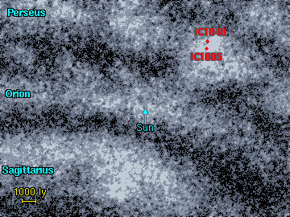
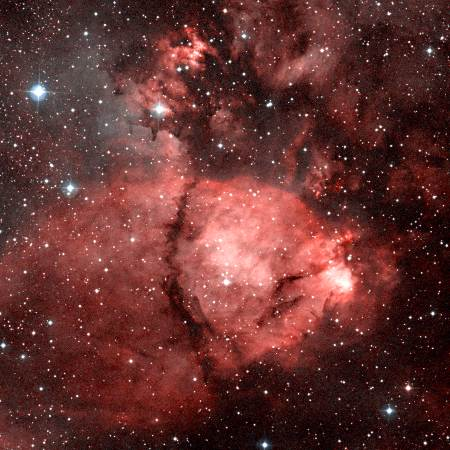

هذه السدم موجودة في ذراع برشاوس المجري. سديم القلب (اليمين) و سديم الروح (اليسار) و هما سديمان لامعان (و يتطلب رؤيتها بوضوح استخدام التلسكوب) في منطقة تتوالد فيها النجوم بكثرة من المجرة. سديم القلب (IC 1805) يسمى أيضا 'سديم الكلب الهارب ' 'Running Dog Nebula' لكونه يشبه كلبا راكضاعند رؤيته باستخدام التلسكوب.
في الجدول أدناه لائحة بالسدم الرئيسية في هذه المنطقة. يعتبر السديمان IC 1805 و IC 1848 من أهم هذه السدم. IC 1795 سديم لامع ملتصق بالجانب اليميني للسديم IC 1805. NGC 896 سديم يمثل الجزء اللامع من السديم IC 1795. IC 1871 هو سديم صغير ملتصق بالجانب الأيسر للسديم IC 1848.
1 2 3 4 5 6 7 8
Catalogue Equatorial Galactic Size Type Distance Size Other Names
Number Coordinates Coordinates (arcmins) (ly) (ly)
RA (2000) Dec l° b°
--------------------------------------------------------------------------------------
NGC 896 02 25.5 +62 01 133.7 +1.1 5' E 6150 9
IC 1795 02 25.8 +61 59 133.8 +1.1 30' E 6150 55
IC 1805 02 32.8 +61 27 134.7 +0.9 100' E 6150 180 Heart Nebula
IC 1848 02 51.4 +60 25 137.2 +0.9 105' E 6550 200 Soul Nebula
IC 1871 03 06.3 +60 40 138.7 +2.0 10' E 6550 19
|
Column 1: The standard catalogue name for the nebula. Column 2: Right Ascension and Declination for epoch 2000. Column 3: Galactic Longitude (l) and Latitude (b). Column 4: Angular size of the nebula in arcminutes. Column 5: Nebula type: E = emission, R = reflection. Column 6: Approximate distance to the nebula. Column 7: Approximate size of the nebula in light years. Column 8: Alternative name of the nebula.
لدينا سبعة من العناقيد النجمية المعروفة بوجودها في منطقة سديمي القلب و الروح. إثنان من هذه العناقيد المذكورة (IC 1805, IC 1848) مرتبطة بشكل وثيق بالسدم و لها نفس رقم التصنيف. و الجدير ذكره بأن هذه البقعة من السماء تحوي أشهر عناقيد نجمية و اسمها 'Sword Handle' و هما (h و Chi Persei) في كوكبة برشاوس و هما إثنان من ألمع العناقيد النجمية في السماء.
1 2 3 4 5 6 7
Catalogue Equatorial Galactic Size Distance Age Other Names
Name Coordinates Coordinates (arcmins) (ly) (million
RA (2000) Dec l° b° years)
-------------------------------------------------------------------------------
Basel 10 02 18.9 +58 19 134.2 -2.6 2' 6350 40
NGC 869 02 19.0 +57 08 134.6 -3.8 18' 6800 12 h Persei
NGC 884 02 22.4 +57 08 135.1 -3.6 18' 7650 11 Chi Persei
IC 1805 02 32.8 +61 27 134.7 +0.9 20' 6150 7
NGC 957 02 33.4 +57 34 136.3 -2.7 10' 5900 11
Berkeley 65 02 39.0 +60 25 135.8 +0.3 5' 7400 10
IC 1848 02 51.2 +60 26 137.2 +0.9 18' 6550 7
|
Column 1: The standard catalogue name for the cluster.
Column 2: Right Ascension and Declination for epoch 2000.
Column 3: Galactic Longitude (l) and Latitude (b).
Column 4: Angular size of the cluster in arcminutes.
Column 5: Distance to the cluster.
Column 6: Approximate age of the cluster in millions of years.
Column 7: Alternative name of the cluster.
References: Dias W, Alessi B, Moitinho A, Lepine J, (2002). New catalogue of optically
visible open clusters and candidates. Astron and Astrophys, 389, 871.
أدناه خريطة للعناقيد النجمية و السدم في هذه المنطقة. و يظهر في الخريطة أيضا مجرتان و تدعيان مجرات ماڤي Maffei galaxies و هما (Maffei I و Maffei II). و لدى اكتشاف هذه المجرات المحتجبة لأول مرة، كان يعتقد بأنها سدم. و صنفت على أنها سدم (Sharpless 191 و Sharpless 197). مؤخرا تم التعرف عليها على أنها مجرات تبعد 15 مليون سنة ضوئية و تقع بعيدا خلف سديمي القلب و الروح.
|  | تم تحديد المسافة إلى هذه السدم بشكل جيد. و السبب الرئيسي هو أنها تحوي عناقيد مركزية في مراكزها (من السهل معرفة المسافة التي تفصلنا عن سديم يحوي داخله عنقودا نجميا) يتواجد سديما القلب و الروح في ذراع برشاوس المجري على بعد 6000 و 6500 سنة ضوئية.هذا الجزء من ذراع برشاوس يشهد نشاطا كثيفا لنشأة النجوم و تشكلها، إذ نصادف في هذه المنطقة العديد من العناقيد النجمية الفتية. |
| إلى اليسار - منظر قريب لسديم - IC 1795 و هو جزء من منطقة IC 1805 . و القسم المضئ من هذه المنطقة أعطي له اسم منفصل و يدعى NGC 896, لأنه أول قسم يتم اكتشافه من هذا السديم. |
 IC 1795. Image size: 0.5°x0.5°. DSS image. |
في الأسفل - زوجين من العناقيد النجمية يعرفان باسم 'h Persei' و هو (NGC 869 - يمين) و 'Chi Persei' و هو(NGC 884 - يسار). زوج العناقيد هذا يعرف باسم 'Sword Handle' أو حامل السيف (بسبب موقعها على السيف من كوكبة برشاوس) و يقع هذان العنقودان بالقرب من سديمي القلب و الروح و من المحتمل أنهما لم ينشأا داخل السديمين (إذ يبدو Chi Persei على بعد 1000 سنة ضوئية خلف السديمين. بينما يبدو h Persei أكثر قربا).